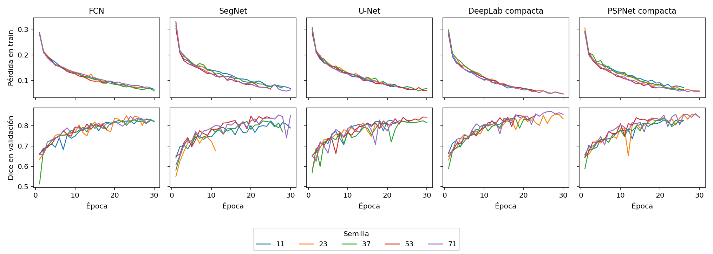
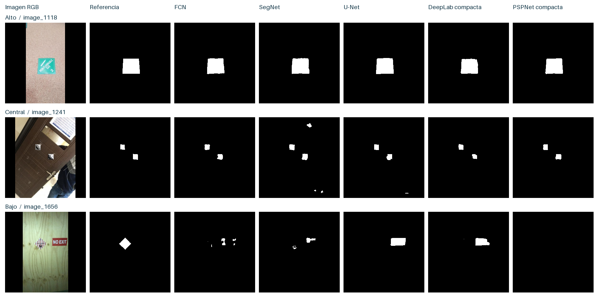
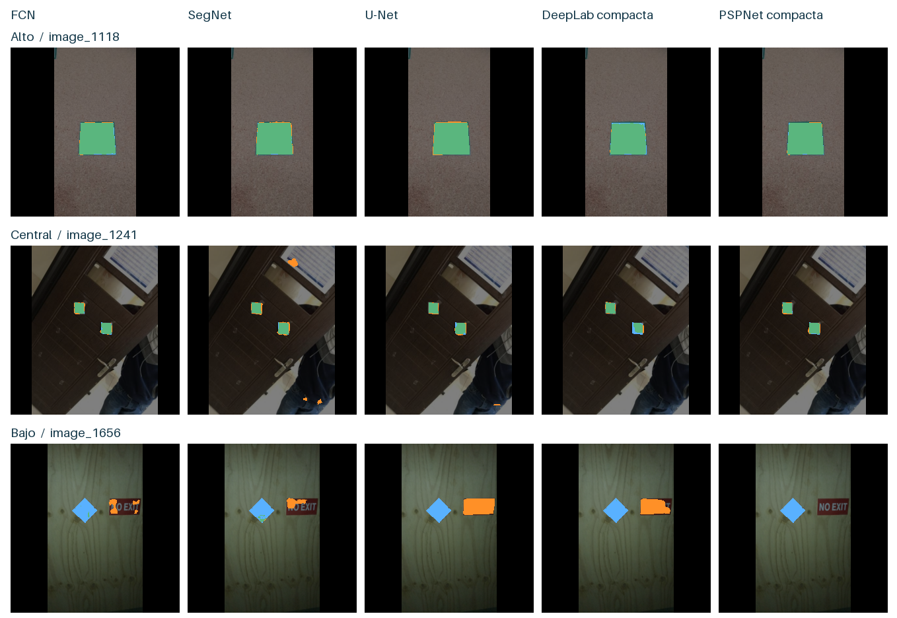
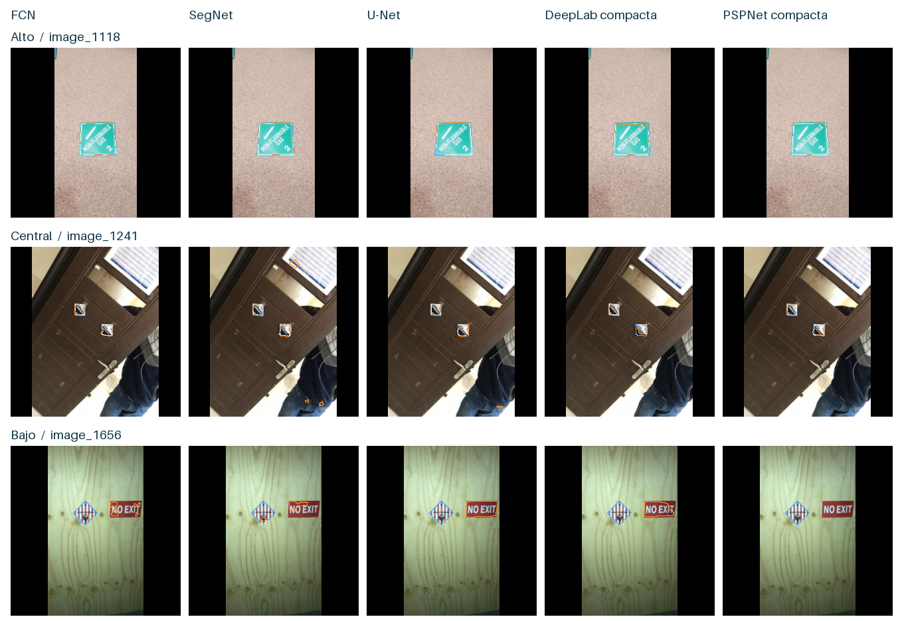
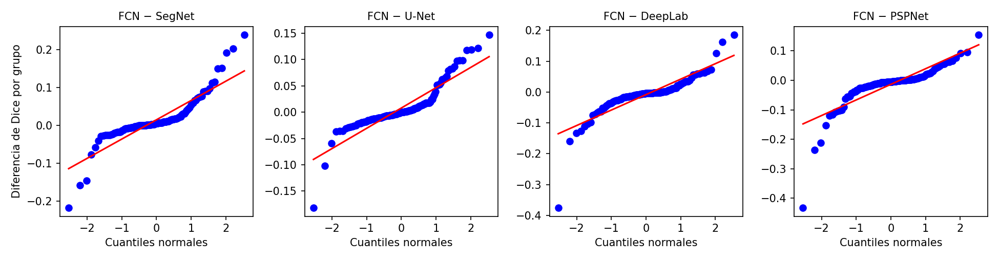

Resultados, baseline y predicciones#
Evaluamos cinco redes con cinco semillas comunes sobre 218 fotografías de test. El cálculo pondera por igual los 122 grupos: primero se promedian las imágenes de cada grupo, después los grupos y finalmente las semillas. Las 5.450 evaluaciones imagen–modelo–semilla pertenecen a un único test interno. Dice e IoU miden el solapamiento del rótulo, la mIoU promedia IoU de rótulo y fondo, y la exactitud cuenta píxeles válidos correctamente clasificados.
Comparación final de cinco líneas base#
DeepLab compacta obtuvo el mayor Dice medio de validación (0,8479). En test, PSPNet compacta encabeza las cinco redes (0,8667), seguida de DeepLab compacta (0,8612) y FCN (0,8531). Las dos mejoras medias frente a FCN quedan por debajo del margen práctico de 0,02. Los intervalos pareados permiten valorar la incertidumbre alrededor de esas mejoras.
Red |
Dice val. |
Dice test |
DE semillas |
IC 95 % Dice |
IoU |
mIoU |
Parámetros |
|---|---|---|---|---|---|---|---|
PSPNet compacta |
0,8442 |
0,8667 |
0,0078 |
0,8444 a 0,8870 |
0,7851 |
0,8875 |
80401 |
DeepLab compacta |
0,8479 |
0,8612 |
0,0217 |
0,8374 a 0,8837 |
0,7799 |
0,8848 |
104481 |
FCN |
0,8330 |
0,8531 |
0,0063 |
0,8284 a 0,8761 |
0,7673 |
0,8783 |
72145 |
U-Net |
0,8272 |
0,8451 |
0,0135 |
0,8167 a 0,8714 |
0,7612 |
0,8747 |
118273 |
SegNet |
0,8193 |
0,8386 |
0,0353 |
0,8124 a 0,8630 |
0,7504 |
0,8691 |
85761 |
Cada imagen se pondera dentro de su grupo y cada grupo recibe el mismo peso. El Dice de validación corresponde al mejor checkpoint de cada semilla. La DE describe la variación entre cinco entrenamientos. Los IC percentiles de test se calcularon con 10.000 remuestreos de los 122 grupos y semillas fijas.
Contrastes previstos frente a FCN#
Modelo menos FCN |
Δ Dice |
IC 95 % pareado |
p t pareado |
p Holm |
|---|---|---|---|---|
DeepLab compacta |
0,0081 |
-0,0016 a 0,0187 |
0,1183 |
0,1183 |
PSPNet compacta |
0,0136 |
0,0032 a 0,0250 |
0,0181 |
0,0361 |
Las pruebas t bilaterales contrastan la diferencia media entre grupos, después de promediar las cinco semillas. Holm ajusta los dos valores p. Los IC son individuales. La inferencia supone independencia entre grupos y se restringe a esta partición y a estos entrenamientos.
Tamaño del rótulo y errores#
Modelo |
≤2 % |
2–5 % |
>5 % |
|---|---|---|---|
PSPNet compacta |
0,8397 |
0,8591 |
0,9192 |
DeepLab compacta |
0,8326 |
0,8563 |
0,9049 |
FCN |
0,8101 |
0,8504 |
0,9038 |
U-Net |
0,8107 |
0,8319 |
0,8990 |
SegNet |
0,7989 |
0,8334 |
0,9038 |
Los estratos se definen por la fracción anotada de cada imagen. Un grupo puede estar representado en más de un estrato. Los objetos pequeños son los más difíciles para las cinco redes. En condiciones portuarias, este patrón importa porque los rótulos distantes ocupan menos píxeles.
Curvas de las 25 corridas#

Se eligió el primer máximo de Dice por grupo en validación. Las curvas terminan al alcanzar 30 épocas o al acumular cinco épocas sin mejora. La pérdida de entrenamiento y el Dice de validación tienen escalas distintas.
Coste observado y alcance#
Tiempo medio registrado por corrida en A100, incluyendo entrenamiento y validación: DeepLab compacta, 2.9 min, PSPNet compacta, 3.0 min. FCN, SegNet y U-Net se entrenaron en CPU y T4. Las diferencias de duración mezclan arquitectura, hardware, caché y perfil numérico. El conteo de parámetros sí se puede comparar directamente.
FCN conserva su papel de referencia del benchmark. PSPNet compacta ofrece el mayor Dice observado en test y su mejora media queda por debajo de δ. La validación sobre otros puertos y otras particiones sigue abierta. El diseño aporta cinco semillas por arquitectura, una partición agrupada y configuraciones fijas. No se realizó búsqueda de hiperparámetros, validación cruzada repetida ni una segunda anotación independiente.
Las métricas de las 25 corridas y el resumen con intervalos se encuentran en comparacion/metricas_25_corridas.csv y comparacion/benchmark.csv del archivo de las cinco redes.
Lectura de las predicciones#
Las filas corresponden a tres casos preseleccionados según el Dice de FCN (alto, central y bajo). Cada columna usa el checkpoint de mejor validación para la semilla 11 de esa arquitectura. La foto, la referencia, el umbral de 0,5 y el área válida son comunes. El ranking global utiliza todas las imágenes y las cinco semillas.

Caso alto · image_1118. Las cinco redes delimitan casi todo el rótulo. PSPNet obtiene Dice 0,990: añade 30 píxeles de fondo y omite 20 del rótulo. DeepLab añade solo 12 píxeles de fondo y omite 106 del objeto. U-Net cubre todos los píxeles anotados y extiende la máscara a 121 píxeles de fondo.
Caso central · image_1241. PSPNet y FCN tienen Dice muy cercano (0,920 y 0,916). SegNet recupera 490 píxeles del rótulo, aunque sus 316 falsos positivos reducen el Dice a 0,750. DeepLab produce menos falsos positivos que las demás redes (52) y también omite más píxeles del rótulo (94).
Caso difícil · image_1656. De los 730 píxeles anotados, SegNet recupera 54, FCN 17 y DeepLab solo uno. U-Net y PSPNet obtienen Dice cero por razones distintas: U-Net marca 1.116 píxeles de fondo y PSPNet deja vacía la predicción.

El verde marca aciertos sobre el rótulo, el naranja muestra dónde la predicción se extiende al fondo y el azul identifica las partes omitidas. Se excluyen las bandas de relleno.

El borde interior de un píxel se dibuja en azul para la anotación, naranja para la predicción y blanco en las coincidencias. En la última fila el error dominante es de localización.
Caso |
Red |
VP |
FP |
FN |
Dice CPU |
Dice del ZIP |
|---|---|---|---|---|---|---|
image_1118 |
FCN |
2485 |
45 |
49 |
0.98144 |
0.98144 |
image_1118 |
SegNet |
2517 |
97 |
17 |
0.97786 |
0.97786 |
image_1118 |
U-Net |
2534 |
121 |
0 |
0.97668 |
0.97668 |
image_1118 |
DeepLab compacta |
2428 |
12 |
106 |
0.97628 |
0.97628 |
image_1118 |
PSPNet compacta |
2514 |
30 |
20 |
0.99015 |
0.99015 |
image_1241 |
FCN |
481 |
68 |
20 |
0.91619 |
0.91619 |
image_1241 |
SegNet |
490 |
316 |
11 |
0.74981 |
0.74981 |
image_1241 |
U-Net |
474 |
91 |
27 |
0.88931 |
0.88931 |
image_1241 |
DeepLab compacta |
407 |
52 |
94 |
0.84792 |
0.84792 |
image_1241 |
PSPNet compacta |
483 |
66 |
18 |
0.92000 |
0.92000 |
image_1656 |
FCN |
17 |
256 |
713 |
0.03390 |
0.03390 |
image_1656 |
SegNet |
54 |
271 |
676 |
0.10237 |
0.10237 |
image_1656 |
U-Net |
0 |
1116 |
730 |
0.00000 |
0.00000 |
image_1656 |
DeepLab compacta |
1 |
890 |
729 |
0.00123 |
0.00123 |
image_1656 |
PSPNet compacta |
0 |
0 |
730 |
0.00000 |
0.00000 |
Diferencia absoluta máxima entre CPU y el registro GPU en las cuatro métricas de las quince predicciones: 0. El cotejo es por métricas; el ZIP no contiene máscaras GPU para certificar identidad píxel a píxel.
Robustez, coste de inferencia y errores#
Se sortearon 24 de los 122 grupos de test (semilla 20261108) y una imagen por grupo. Los mismos 25 checkpoints procesaron cada imagen sin perturbación y con tres cambios por separado: brillo ×1,25, ruido gaussiano de DE 12 sobre la escala 0–255 y desenfoque gaussiano de radio 2 píxeles. Son diagnósticos internos. La mayor diferencia absoluta entre el Dice original recalculado en CPU y el registrado en el ZIP para esas imágenes fue 0,0009.
Red |
Dice original |
Δ brillo |
Δ ruido |
Δ desenfoque |
|---|---|---|---|---|
PSPNet compacta |
0,8877 |
-0,0224 |
-0,0016 |
-0,2330 |
DeepLab compacta |
0,8881 |
-0,0267 |
-0,0013 |
-0,2185 |
FCN |
0,8755 |
-0,0384 |
-0,0007 |
-0,3132 |
U-Net |
0,8676 |
-0,0358 |
0,0003 |
-0,2578 |
SegNet |
0,8588 |
-0,0366 |
0,0012 |
-0,2219 |
Coste por fotografía#
Red |
Mediana (ms) |
P90 (ms) |
GMAC convoluciones |
|---|---|---|---|
PSPNet compacta |
24.25 |
26.76 |
0.65 |
DeepLab compacta |
28.87 |
31.19 |
0.76 |
FCN |
21.81 |
29.26 |
0.63 |
U-Net |
57.39 |
64.14 |
1.84 |
SegNet |
39.36 |
52.28 |
1.06 |
Medición local en CPU con dos hilos y lote 1, después de un calentamiento por checkpoint. Se cronometró únicamente la pasada hacia delante en 120 observaciones por arquitectura. Los GMAC cuentan multiplicaciones y acumulaciones de las convoluciones (una MAC equivale aproximadamente a dos FLOP); quedan fuera pooling, interpolaciones, transferencias y preprocesamiento.
Falsos positivos y omisiones#
Red |
FP por imagen |
FN por imagen |
|---|---|---|
PSPNet compacta |
258.0 |
115.1 |
DeepLab compacta |
236.9 |
125.5 |
FCN |
233.5 |
168.8 |
U-Net |
296.0 |
142.9 |
SegNet |
283.2 |
157.0 |
Conteos medios de píxeles válidos de 256 × 256 sobre la submuestra sin perturbación. Un FP extiende la predicción a fondo anotado y un FN omite parte del rótulo.
Categorías presentes y casos difíciles#
Se realizaron 26 contrastes exploratorios entre FCN y las nuevas bases, uno por modelo y categoría presente. Cada imagen conserva su máscara binaria completa. Se promediaron imágenes dentro del grupo y luego semillas. Con ajuste de Holm sobre toda la familia, 0 contrastes tuvieron p ajustado inferior a 0,05. La tabla comparacion/categorias.csv del ZIP incluye los tamaños de muestra y las diferencias.
Cinco imágenes con menor Dice medio en las 25 corridas. Los ejemplos se ordenaron sobre todas las imágenes de test.
Imagen |
Grupo |
Dice medio |
|---|---|---|
image_0538 |
g_image_0538 |
0,2105 |
image_0542 |
g_image_0145 |
0,3816 |
image_1656 |
g_image_1656 |
0,4033 |
image_1541 |
g_image_0538 |
0,4097 |
image_0380 |
g_image_0380 |
0,4794 |
Fuentes de variación#
En la tabla equilibrada de 5 redes × 5 semillas × 122 grupos, la suma de cuadrados del Dice se distribuye en 0.4 % para diferencias medias entre redes, 0.4 % para semillas y 76.2 % para grupos. El 23.0 % restante reúne interacciones. Es una descomposición descriptiva de esta partición. Los grupos concentran la mayor parte de la variabilidad.
El contraste global de Friedman, bloqueado por grupo y con semillas fijas, dio Q=67.51 y p=7.62e-14.
Comparaciones exploratorias de Nemenyi para las cinco redes. Los contrastes primarios frente a FCN se definieron por separado frente a FCN.
Red |
Comparador |
p Nemenyi |
|---|---|---|
FCN |
U-Net |
0,7662 |
FCN |
SegNet |
0,0120 |
FCN |
DeepLab compacta |
0,0034 |
FCN |
PSPNet compacta |
0,0008 |
U-Net |
SegNet |
0,0001 |
U-Net |
DeepLab compacta |
0,1183 |
U-Net |
PSPNet compacta |
0,0466 |
SegNet |
DeepLab compacta |
0,0000 |
SegNet |
PSPNet compacta |
0,0000 |
DeepLab compacta |
PSPNet compacta |
0,9962 |
Los resultados por imagen y perturbación se conservan en comparacion/robustez_24_grupos.csv del ZIP.
Variación entre semillas y equivalencia práctica#
La planificación usa el mejor Dice de validación de cada corrida. Con cinco semillas comunes, la media, la desviación estándar (DE) y su cociente (CV) describen la estabilidad observada bajo la misma partición.
Red |
Media |
DE |
CV (%) |
|---|---|---|---|
FCN |
0,8330 |
0,0162 |
1.95 |
SegNet |
0,8193 |
0,0413 |
5.04 |
U-Net |
0,8272 |
0,0106 |
1.28 |
DeepLab |
0,8479 |
0,0178 |
2.10 |
PSPNet |
0,8442 |
0,0135 |
1.60 |
La equivalencia usa dos pruebas unilaterales (TOST) sobre la diferencia media de Dice entre grupos, con margen ±0,02 y semillas fijas. Holm corrige los diez contrastes de esta familia exploratoria. R aproxima las semillas necesarias para detectar 0,02 con potencia 0,80 y α bilateral 0,05 usando la DE pareada de validación. Cinco observaciones dan una estimación imprecisa de esa DE.
Par |
Δ Dice test |
IC 90 % |
p TOST Holm |
R aprox. |
|---|---|---|---|---|
FCN − SegNet |
0,0144 |
0,0060 a 0,0229 |
0,7915 |
52 |
FCN − U-Net |
0,0079 |
0,0017 a 0,0142 |
0,0082 |
14 |
FCN − DeepLab |
-0,0081 |
-0,0167 a 0,0004 |
0,0818 |
8 |
FCN − PSPNet |
-0,0136 |
-0,0230 a -0,0042 |
0,7915 |
4 |
SegNet − U-Net |
-0,0065 |
-0,0140 a 0,0010 |
0,0133 |
22 |
SegNet − DeepLab |
-0,0226 |
-0,0304 a -0,0147 |
1,0000 |
39 |
SegNet − PSPNet |
-0,0280 |
-0,0367 a -0,0194 |
1,0000 |
44 |
U-Net − DeepLab |
-0,0161 |
-0,0249 a -0,0072 |
0,9278 |
9 |
U-Net − PSPNet |
-0,0216 |
-0,0320 a -0,0111 |
1,0000 |
9 |
DeepLab − PSPNet |
-0,0055 |
-0,0109 a -0,0001 |
0,0001 |
2 |
Un p TOST ajustado inferior a 0,05 respalda equivalencia dentro del margen. Los contrastes de superioridad frente a FCN del benchmark responden a si la diferencia media es distinta de cero. Los diez contrastes se detallan en comparacion/equivalencia_y_dimensionamiento.csv del ZIP.
Supuesto de normalidad y contraste no paramétrico#
El t pareado, el TOST y los intervalos pareados suponen que las diferencias de Dice entre dos redes, calculadas por grupo de similitud (n = 122, promedio de las cinco semillas), siguen una distribución normal. La prueba de Shapiro-Wilk contrasta esa hipótesis: un valor p pequeño indica que las diferencias no son normales.
Par |
Δ Dice |
Shapiro W |
p Shapiro |
p t pareado |
p Wilcoxon |
|---|---|---|---|---|---|
FCN − SegNet |
0,0144 |
0,811 |
3,3 × 10⁻¹¹ |
0,0055 |
0,0007 |
FCN − U-Net |
0,0079 |
0,843 |
4,5 × 10⁻¹⁰ |
0,0382 |
0,4595 |
FCN − DeepLab |
−0,0081 |
0,773 |
1,8 × 10⁻¹² |
0,1183 |
0,0081 |
FCN − PSPNet |
−0,0136 |
0,712 |
3,6 × 10⁻¹⁴ |
0,0181 |
0,0030 |
SegNet − U-Net |
−0,0065 |
0,717 |
5,0 × 10⁻¹⁴ |
0,1526 |
0,0001 |
SegNet − DeepLab |
−0,0226 |
0,786 |
4,7 × 10⁻¹² |
< 10⁻⁵ |
< 10⁻⁸ |
SegNet − PSPNet |
−0,0280 |
0,704 |
2,3 × 10⁻¹⁴ |
< 10⁻⁶ |
< 10⁻¹⁰ |
U-Net − DeepLab |
−0,0161 |
0,682 |
6,5 × 10⁻¹⁵ |
0,0033 |
0,0031 |
U-Net − PSPNet |
−0,0216 |
0,619 |
2,6 × 10⁻¹⁶ |
0,0009 |
0,0035 |
DeepLab − PSPNet |
−0,0055 |
0,807 |
2,3 × 10⁻¹¹ |
0,0931 |
0,1094 |
Lectura. Ninguna de las diez diferencias es normal (p de Shapiro menor que 10⁻⁹ en todos los pares): la distribución tiene colas pesadas, porque unos pocos grupos difíciles concentran las diferencias grandes. Por eso el contraste principal es la prueba de rangos con signo de Wilcoxon, que no supone normalidad y compara si una red supera a la otra en la mayoría de los grupos. El t pareado se conserva como referencia.
Qué cambia respecto del t pareado.
FCN frente a DeepLab: el t no detecta diferencia (p = 0,118), pero Wilcoxon sí (p = 0,008). DeepLab supera a FCN en la mayoría de los grupos, aunque la diferencia media es pequeña (0,008).
FCN frente a U-Net: el t da p = 0,038, pero Wilcoxon no (p = 0,46). La ventaja media de FCN se debe a pocos grupos, y no hay diferencia demostrable.
PSPNet frente a FCN: las dos pruebas coinciden en que PSPNet gana (Wilcoxon p = 0,003).
Para los contrastes previstos contra FCN, la corrección de Holm se aplica sobre los valores p de Wilcoxon. El TOST de equivalencia (±0,02) también supone normalidad. Su veredicto debe leerse con cautela, o confirmarse con un intervalo bootstrap de la diferencia por grupos, que no depende de esa forma.
Cálculo: verificar_benchmark.py sobre test/*/por_imagen.csv del archivo de las cinco redes.
Supuestos de los contrastes#
Homogeneidad de varianzas. La prueba de Levene, centrada en la mediana, compara la dispersión del Dice por grupo entre las cinco redes: W = 0,686, p = 0,602. No hay evidencia de que la variabilidad difiera entre redes (desviaciones estándar entre 0,120 en PSPNet y 0,156 en U-Net), así que Friedman y las comparaciones pareadas no están afectadas por varianzas desiguales.
Independencia. La unidad es el grupo de similitud, y cada grupo está completo en una sola partición. Las cinco redes se evalúan sobre los mismos 122 grupos, por eso las comparaciones son pareadas. Las semillas comparten el mismo test, así que no son réplicas independientes del experimento; se promedian dentro de cada grupo.
Normalidad. La figura muestra los Q-Q de las diferencias contra FCN. Las colas se separan de la recta: unos pocos grupos difíciles concentran las diferencias grandes. Por eso se usa Wilcoxon (sección de normalidad).


Figura 2 Q-Q normal de las diferencias de Dice por grupo entre FCN y cada red.#
Diferencias relativas y umbral para modelos avanzados#
La diferencia relativa expresa la diferencia de Dice como porcentaje del Dice de la segunda red del par. La diferencia mínima detectable (DMD) es la menor diferencia que cinco semillas pueden detectar con α = 0,05 y potencia de 0,80, dada la desviación estándar pareada en validación: DMD = (z₀,₉₇₅ + z₀,₈₀) · σ̂d / √5.
Par |
Δ Dice |
Δ relativa |
DMD (5 semillas) |
|---|---|---|---|
FCN − SegNet |
0,0144 |
1,72 % |
0,0645 |
FCN − U-Net |
0,0079 |
0,94 % |
0,0323 |
FCN − DeepLab |
−0,0081 |
−0,94 % |
0,0247 |
FCN − PSPNet |
−0,0136 |
−1,57 % |
0,0157 |
SegNet − U-Net |
−0,0065 |
−0,77 % |
0,0416 |
SegNet − DeepLab |
−0,0226 |
−2,62 % |
0,0554 |
SegNet − PSPNet |
−0,0280 |
−3,24 % |
0,0589 |
U-Net − DeepLab |
−0,0161 |
−1,87 % |
0,0259 |
U-Net − PSPNet |
−0,0216 |
−2,49 % |
0,0254 |
DeepLab − PSPNet |
−0,0055 |
−0,63 % |
0,0098 |
Las cinco redes quedan dentro de un rango de 3,2 % relativo. En siete de los diez pares, la DMD supera el margen de relevancia δ = 0,02, es decir, cinco semillas no bastan para detectar una diferencia de ese tamaño con potencia de 0,80. Solo entre FCN y PSPNet, y entre DeepLab y PSPNet, la DMD queda por debajo de δ.
Umbral para los modelos avanzados. El mejor modelo base es PSPNet compacta (Dice de test por grupos de 0,8667). Entre las dos mejores redes, la DMD (0,0098) es menor que δ, así que el margen lo fija δ. Un modelo avanzado del Entregable 2 tendrá que superar 0,887 de Dice (0,8667 + 0,02) con el mismo protocolo para considerarse una mejora práctica, y su comparación contra PSPNet deberá ser significativa con la prueba pareada no paramétrica.
Entrenamiento: convergencia y costo#
Red |
Dispositivo |
Minutos por corrida |
Corridas en el tope de 30 épocas |
Mejor época (media) |
Mejor época entre las 3 últimas |
|---|---|---|---|---|---|
FCN |
CPU y T4 |
22,7 |
2 de 5 |
22,2 |
0 |
SegNet |
CPU y T4 |
22,9 |
2 de 5 |
20,2 |
0 |
U-Net |
CPU y T4 |
27,8 |
2 de 5 |
22,2 |
2 |
DeepLab compacta |
GPU A100 |
2,9 |
2 de 5 |
20,4 |
1 |
PSPNet compacta |
GPU A100 |
3,0 |
2 de 5 |
22,2 |
1 |
Diez de las 25 corridas llegan al tope de 30 épocas sin que actúe la parada temprana (paciencia 5). En seis de esas diez, el mejor Dice de validación se alcanzó antes de las tres últimas épocas, lo que indica una meseta. En las otras cuatro (dos de U-Net, una de DeepLab y una de PSPNet), la validación seguía mejorando al cortar, así que esas redes podrían estar algo subentrenadas. Esto favorecería, si acaso, a FCN y SegNet.
Hardware. FCN, SegNet y U-Net se entrenaron en CPU y en GPU T4 (las tres corridas de semilla 11 y FCN con semilla 23 en CPU; las demás en T4), con determinismo en modo de advertencia, y su test se evaluó en T4. DeepLab y PSPNet se entrenaron en una GPU A100 sin determinismo estricto. Los tiempos de entrenamiento mezclan dispositivos y no son comparables entre los dos grupos, y por eso el costo se compara con la latencia de inferencia, que se midió en la misma CPU. La diferencia de hardware y de determinismo es una amenaza a la validez interna del contraste entre los dos grupos de redes: parte de la ventaja de PSPNet y DeepLab podría deberse al entorno y no a la arquitectura.
Generalización: entrenamiento, validación y test#
El Dice de entrenamiento se calculó después, pasando cada uno de los 25 checkpoints elegidos por las 1.015 imágenes de train con el mismo preprocesamiento y la misma ponderación por grupos. Como control, se recalculó también el Dice de validación de cada checkpoint, y coincidió con el registrado durante el entrenamiento en las 25 corridas.
Red |
Dice de entrenamiento |
Dice de validación |
Dice de test |
Entrenamiento − validación |
|---|---|---|---|---|
FCN |
0,8815 |
0,8330 |
0,8531 |
0,0485 |
SegNet |
0,8651 |
0,8193 |
0,8386 |
0,0458 |
U-Net |
0,8815 |
0,8272 |
0,8451 |
0,0543 |
DeepLab compacta |
0,9054 |
0,8479 |
0,8612 |
0,0575 |
PSPNet compacta |
0,8947 |
0,8442 |
0,8667 |
0,0505 |
La brecha entre entrenamiento y validación va de 0,046 (SegNet) a 0,058 (DeepLab): las cinco redes ajustan mejor los datos con que aprendieron, con un sobreajuste moderado y parecido entre ellas. Las dos redes con contexto multiescala tienen la brecha algo mayor, pero también el mejor desempeño en validación y en test, así que su ventaja no se explica por memorizar el entrenamiento. En test, las cinco rinden entre 1,3 y 2,3 puntos más que en validación. No hay señal de sobreajuste a la validación, y la diferencia apunta a que el test es algo más fácil, coherente con el EDA (fracción de etiqueta, KS p = 0,007). Como el desplazamiento es parecido en las cinco redes, no altera el orden entre ellas.
Cálculo: dice_entrenamiento.py con HAZMAT-13 descargado del enlace oficial. El SHA-256 de las 1.233 imágenes y
máscaras de train y validación coincidió con los manifiestos.
Equivalencia sin suponer normalidad#
Como las diferencias por grupo no son normales, el TOST se confirma con un intervalo bootstrap del 90 % de la diferencia media (10.000 remuestreos de los 122 grupos). Dos redes son equivalentes si ese intervalo cae completo dentro de ±0,02.
Par |
IC 90 % bootstrap |
Equivalentes (±0,02) |
|---|---|---|
FCN − U-Net |
[0,0017; 0,0142] |
sí |
FCN − DeepLab |
[−0,0167; 0,0001] |
sí |
SegNet − U-Net |
[−0,0136; 0,0010] |
sí |
DeepLab − PSPNet |
[−0,0109; −0,0004] |
sí |
FCN − SegNet |
[0,0061; 0,0229] |
no |
FCN − PSPNet |
[−0,0231; −0,0048] |
no |
SegNet − DeepLab |
[−0,0304; −0,0150] |
no |
SegNet − PSPNet |
[−0,0369; −0,0200] |
no |
U-Net − DeepLab |
[−0,0252; −0,0079] |
no |
U-Net − PSPNet |
[−0,0322; −0,0121] |
no |
El bootstrap da los mismos veredictos que el TOST paramétrico, así que la conclusión de equivalencia no depende del supuesto de normalidad.
Limitaciones declaradas#
Semillas. Se ejecutaron 5 por red. El dimensionamiento pide entre 4 y 52 según el par (8 para FCN contra DeepLab y 14 para FCN contra U-Net), y en siete pares la DMD supera δ.
Hiperparámetros. No se hizo búsqueda: las cinco redes usan la misma tasa fija de 0,001 y la misma paciencia. Esto puede subestimar a las redes que se beneficiarían de otra tasa.
Validación cruzada. No hay validación cruzada repetida. Las semillas comparten un mismo test, así que la varianza entre semillas no incluye la variación por partición.
Hardware. Hay dos entornos distintos, descritos arriba.
Cota de referencia. No hay segunda anotación ni desempeño humano, así que el techo alcanzable del Dice es desconocido.
Aumentos de datos. No se usaron, para que la comparación aislara la arquitectura. Los resultados no dicen cómo cambiaría el orden con aumentos.
Cálculo: complementos_resultados.py sobre el archivo de las cinco redes (semilla del bootstrap 20261108).
Decisión para la siguiente etapa#
DeepLab compacta fue la mejor en validación (0,8479), el criterio definido para seleccionar un modelo. PSPNet compacta alcanzó el mayor Dice en el test interno (0,8667). Como las diferencias por grupo no son normales, la prueba principal es Wilcoxon: PSPNet supera a FCN (p = 0,003) y DeepLab también (p = 0,008), aunque la diferencia media de DeepLab es pequeña (0,008). La diferencia media de PSPNet frente a FCN fue +0,0136, con IC 95 % de +0,0032 a +0,0250; el intervalo abarca el margen práctico de +0,02, así que persiste incertidumbre sobre si la ventaja alcanza la magnitud fijada.
El desenfoque produjo la mayor pérdida de Dice entre las perturbaciones ensayadas. En las 24 imágenes de la auditoría, PSPNet perdió 0,2330 y FCN perdió 0,3132. Esto orienta la recolección de fotografías con rótulos distantes y bordes poco definidos. Para el próximo estudio, FCN sirve como comparador, DeepLab como candidato elegido por validación y PSPNet como candidato cuya ventaja se debe comprobar en nuevos grupos.
Discusión crítica#
¿Qué modelo base funciona mejor y por qué? PSPNet compacta obtiene el mayor Dice de test por grupos (0,8667) y supera a FCN de forma significativa con la prueba de Wilcoxon (p = 0,003); DeepLab compacta también la supera (p = 0,008). Las dos comparten el sesgo inductivo que las otras tres no tienen: contexto agregado a varias escalas (rejillas regionales en PSPNet, convoluciones dilatadas en DeepLab). Para un rótulo que ocupa en mediana el 3 % de la imagen y se parece en color al fondo, saber qué hay alrededor ayuda más que recuperar el borde fino. Las redes que reconstruyen el detalle (U-Net, SegNet) no mejoran a FCN: U-Net es equivalente (bootstrap IC 90 % [0,0017; 0,0142]) y SegNet queda por debajo.
¿Es por capacidad? No. PSPNet compacta tiene 80.401 parámetros, menos que U-Net (118.273) y DeepLab (104.481). El orden no sigue al tamaño, sino al mecanismo de contexto. Sí hay una confusión que no se puede descartar: DeepLab y PSPNet se entrenaron en GPU A100 y las otras tres en CPU y T4, así que parte de la ventaja podría deberse al entorno.
¿Cuál generaliza mejor? Ninguna muestra sobreajuste a la validación: las cinco rinden más en test que en validación. DeepLab tiene la menor diferencia entre las dos (+0,013) y PSPNet la mayor (+0,023). La estabilidad entre semillas favorece a FCN (DE 0,006) y PSPNet (0,008) frente a SegNet (0,035), que es la más sensible a la inicialización.
¿Cuánto margen queda frente a la literatura? En los estudios de señales revisados, el modelo propuesto supera al mejor modelo base por 2 a 10 puntos de IoU, siempre en una sola corrida. Aquí las cinco redes base quedan dentro de 2,8 puntos de Dice (3,2 % relativo) entre la mejor y la peor. Un modelo avanzado del Entregable 2 tendrá que superar 0,887 de Dice para contar como una mejora práctica.
¿Son significativas las diferencias? Friedman rechaza que las cinco redes sean iguales (Q = 67,51, p < 10⁻¹³). Por pares, con Wilcoxon, PSPNet y DeepLab superan a FCN, U-Net y SegNet. FCN y U-Net son equivalentes dentro de ±0,02, y también lo son DeepLab y PSPNet.
Amenazas a la validez.
Internas: dos entornos de hardware, sin búsqueda de hiperparámetros, 5 semillas (menos de lo que pide el dimensionamiento), 4 corridas cortadas mientras la validación seguía mejorando, y un test consultado durante el desarrollo.
Externas: un solo corpus (HAZMAT-13) con fotografías de pocas fuentes y concentración por carpeta; los resultados no se extienden a video, a otras condiciones de captura ni a rótulos fuera de estas 13 categorías.
De construcción: el Dice binario no distingue si el rótulo segmentado es de la categoría correcta, y sin segunda anotación el ruido de etiqueta es desconocido. Las versiones compactas no son las arquitecturas originales, así que el resultado compara mecanismos, no los modelos publicados.
Recomendaciones para el Entregable 2. Correr todas las redes en el mismo entorno y con al menos 8 semillas; partir de PSPNet como referencia; probar arquitecturas que combinen contexto multiescala con recuperación de bordes (por ejemplo DeepLabv3+); y añadir aumentos de datos y una búsqueda de hiperparámetros con el mismo presupuesto para todas.
Alcance y limitaciones#
Aspecto |
Evidencia y límite |
|---|---|
Procedencia y anotación |
Los manifiestos congelan las copias utilizadas mediante SHA-256. La revisión visual previa identifica errores concretos. Quedan sin estimar la tasa poblacional de ruido y el acuerdo con un segundo anotador. La identidad con la descarga oficial del corpus se verificó por SHA-256 en train y validación. |
Diseño e independencia |
Se usaron cinco semillas comunes y una partición agrupada. El piloto retrospectivo permite estimar la dispersión y dimensionar otro estudio. La validación cruzada agrupada repetida, una sexta semilla y un test externo quedan fuera del diseño ejecutado. |
Entrenamiento |
Las configuraciones se fijaron sin búsqueda de hiperparámetros. La brecha entre entrenamiento y validación se midió con los checkpoints elegidos (0,046 a 0,058). Los historiales no registran el Dice de entrenamiento por época, así que no hay curvas de esa brecha. |
Inferencia e interpretación |
El benchmark incluye las cuatro métricas con dispersión e intervalos, contrastes pareados, equivalencia entre arquitecturas, coste, segmentación por tamaño y diagnóstico de robustez. La latencia se midió en CPU y las perturbaciones sobre una submuestra de test. Las métricas por categoría describen presencia en imágenes con máscara binaria. |